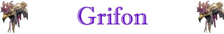

Stretta per Divorare;
Sanguinamento Inferiore;
Robustezza Superiore (+5 punti ferita);

|
|
Ambiente/Habitat | Colline e Montagne |
| Frequenza | Uncommon | |
| Organizzazione | Solitario (o Branco) | |
| Periodo di Attività | Giorno | |
| Dieta | Carnivora | |
| Intelligenza | Semi-Intelligent (2-4) | |
| Punti Combattimento | Nessuno | |
| Tesoro | Vedi Sotto | |
| Allineamento Dominante | Neutrale | |
| Numero di Apparizione | 1d100: (1-86) 1 (87-100) 3d3 | |
| Classe Armatura | 3 [10 base, -4 corazza, -3 destrezza] | |
| Movimento | 8 esagoni, 12 esagoni volando | |
| Dadi Vita | 7 (+5 punti ferita) | |
| Thac0 | 13 | |
| Numero di Attacchi | 1 becco e 2 artigli | |
| Danni | 1d8+1 (punta) /1d6+1 (taglio) / 1d6+1 (taglio) | |
| Poteri Offensivi | Istinto Predatorio; Stretta per Divorare; Sanguinamento Inferiore; |
|
| Poteri Difensivi | Schivata Migliorata; Robustezza Superiore (+5 punti ferita); |
|
| Poteri Generici | Nessuno | |
| Vulnerabilità | Nessuna | |
| Resistenza alla Magia | Nessuna | |
| Sensi | Vista Acuta, Sensi Superiori; | |
| Dimensioni | Large (3 m. lunghezza) | |
| Morale | Champion (15) | |
| Valore in Punti Esperienza | 1478 |
| MODIFICATORI AI TIRI SALVEZZA | |||||||||||||||||||||||
| COR | +5 | 37 | ENV | 0 | 47 | MAG | 0 | 57 | MAL | 0 | 41 | MEN | 0 | 55 | RIF | +10 | 39 | ROB | 0 | 44 | VEL | 0 | 38 |
Descrizione
11 corpo di questa bestia assomiglia a quello di un leone muscoloso . La testa e le zampe anteriori sono quelle di una grande aquila e possiede un paio di larghe ali dorate. Dal naso alla coda, un grifone adulto può arrivare fino a 3 metri. Né i maschi né le femmine sono dotati di criniera . Dalla schiena della creatura emergono un paio di ampie ali dorate che si aprono per più di 6 metri. Un grifone adulto pesa circa 250 kg.
Combat
I grifoni sono creature potenti e maestose che uniscono le caratteristiche dei leoni e delle aquile . Danno la caccia ad ogni tipo di bestia, ma preferiscono la carne di cavallo più di ogni altra cosa.
ISTINTO PREDATORIO (Moderate Special Ability): La creatura possiede un forte istinto predatorio, per tale motivo costei riceve un bonus costante di +1 ai suoi tiri per colpire.
STRETTA PER DIVORARE (Lesser Special Ability): Questa creatura è in grado di utilizzare i propri artigli per stringere l'avversario e morderlo con ferocia. Qualora, infatti, questa creatura colpisce con entrambi gli artigli lo stesso avversario, lo terrà stretto e potrà morderlo con incredibile accuratezza. In particolare, l'attacco simultaneo di morso eventualmente effettuato contro il medesimo avversario riceverà un bonus di +4 al tiro per colpire e di +2 al dado base delle ferite.
SANGUINAMENTO INFERIORE (Lesser Special Ability) [BECCO] : Se la creatura colpisce con l'attacco indicato un avversario particolarmente a fondo, ossia con un tiro per colpire naturale pari a 18, 19 o 20, lo stesso provocherà un'emorragia alla vittima (sempre che la stessa sia dotata di un corpo di tipo animale). La vittima, quindi, perderà 1 punto ferita alla fine del round in corso, inoltre la stessa dovrà effettuare un tiro salvezza su robustezza (senza applicazione di modificatori dovuti alla differenza di livello) alla fine di ogni successivo round. Fino a che, dunque, la vittima non supererà tale tiro salvezza la stessa perderà 1 punto ferita alla fine di ogni round. Se il tiro salvezza riesce la vittima non subirà la perdita di punti ferita per quel singolo round e la ferita smetterà di sanguinare facendo terminare definitivamente l'emorragia. Questo tipo di emorragia può essere fermata, prima della sua fine, come se si trattasse dell'effetto dei colpi critici "emorragia minore".
SCHIVATA MIGLIORATA (Moderate Special Ability): La creatura è particolarmente agile. Una volta al round, infatti, la stessa potrà provare a schivare un qualsiasi attacco ricevuto in corpo a corpo da una posizione frontale che non sia di dimensioni superiori a large. La creatura ha il 25% di riuscire a schivare il colpo in arrivo. Questo tiro percentuale va effettuato prima del tiro per colpire effettuato dall'avversario. Se l'avversario effettua un 20 naturale sull'attacco che la creatura era riuscita a schivare lo stesso andrà comunque a segno ma senza conseguenze critiche. Al tiro percentuale andranno applicate le penalità previste per il mantenimento della concentrazione in situazioni di combattimento particolari (come ad esempio incapacitato). La creatura non potrà provare a schivare in alcun caso attacchi a distanza.
ROBUSTEZZA SUPERIORE (Typical Ability): Il fisico della creatura è estremamente robusto. Ciò conferisce alla stessa una robustezza superiore che gli garantisce 5 punti ferita supplementari.
Habitat/Society
I grifoni fanno il nido in luoghi sopraelevati e si lanciano giù con un grido stridulo da aquila per attaccare la preda. Benché siano sia aggressivi che territoriali, sono anche abbastanza intelligenti da evitare i nemici palesemente troppo potenti. Attaccano quasi sempre i cavalli, comunque, e chiunque tenti di proteggere un cavallo da un grifone affamato spesso finisce per far parte anch'egli del pasto.
Ecology
I grifoni possono essere addestrati quali cavalcature per creature di taglia massima media. In particolare, risulta assai più facile addestrare un grifone cucciolo rispetto ad un adulto. Per tale motivo un uova di grifone intatto (che quindi si schiuda) ha un valore che può raggiungere anche le 2000 monete d'oro, mentre un cucciolo di grifone può essere venduto ad un valore pari a 5000 monete d'oro. Capacità di trasporto terrestre (per volare i valori devono essere dimezzati): Un peso non superiore a 100 kg costituisce un carico leggero per un grifone ; 101-250 kg un carico medio; 251-400 kg un carico pesante.
Mystical Resource Sourge (Mani) Quantità: 5, Presenza 25% - Effetto Particolare: Volare - Qualità della Risorsa: Common.